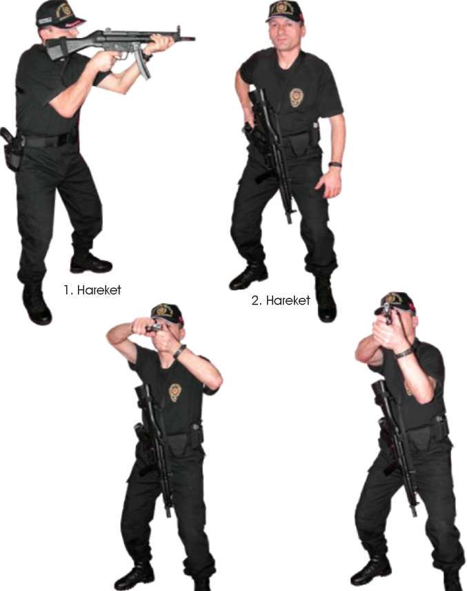

2. Silahınızı değiştirdikten sonra koşu esnasında herhangi bir teknik uygu-lamayacaksanız, silahınızı askı kayışını takılı olduğu sağ veya solundan önünüze doğru bırakın. Kılıfınızda bulunan yarı otomatik tabancanızı çekin. Yarı otomatik tabancanız boşsa kurarak, dolu ise direk hedefinize doğrultarak atış
yapın. (Bakınız Resim-18.b)
3. Hareket
Resim-18.b) MP5 Makinalı Tabancadan Yarı Otomatik Tabancaya Geçerek Atış
Tekniği (Öne Bırakarak)
Tekniği Uygulamalı Olarak Çalışma Şekli
^ Emniyet tedbirlerini okuyun. Atış poligonuyla ilgili gerekli önlemleri alın.
^ Vücudunuzu basit ısınma teknikleri ile ısındırın ve çalışmaya hazırlayın.
MP5 makinalı tabanca ve yarı otomatik tabancayı ve şarjörlerini kontrol edip koruyucu malzemeleri giyin ve giydirin.